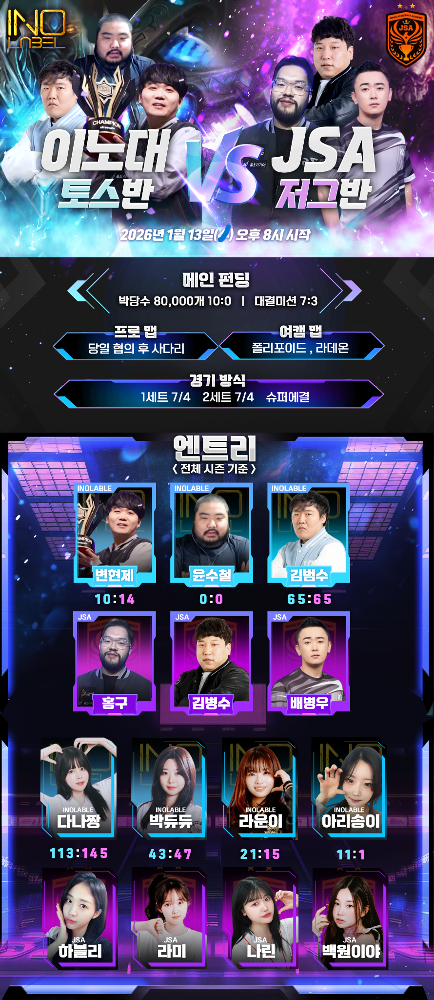
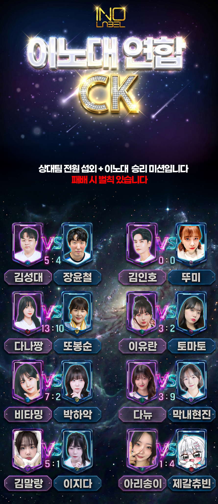

편집만 하는 편집자는 끝났습니다
"코딩 포토샵 편집 세무처리"
다재다능한 편집자 여기있습니다
메인 채널 통합 편집과 썸네일 총괄
Premiere Pro
Photoshop
게임과 합방 콘텐츠를 중심으로 메인 채널 전반의 편집과 썸네일을 통합 관리해왔습니다 장르별 시청 흐름을 고려한 컷 분배와 다이나믹한 교차 편집으로 콘텐츠 몰입도를 끌어올리는 파이프라인을 구축했습니다
풀영상 채널 운영과 아카이빙
OBS
Premiere Pro
AI
풀영상 채널의 장기 운영을 맡아 콘텐츠 아카이빙과 관리 구조를 정리했습니다 AI 기반 저작권 필터링을 적용해 문제 소지를 사전에 차단하고 안정적인 채널 운영 환경을 유지했습니다
대회 및 대규모 콘텐츠 방송 UI 제작
After Effects
Photoshop
대회 및 대형 콘텐츠에 사용되는 방송 화면 UI를 직접 설계 제작했습니다 스폰서 노출과 스코어보드 구성 정보 배치를 정리해 현장감과 몰입도를 동시에 고려한 UI를 구현했습니다
콘텐츠 공지와 포스터 디자인
Photoshop
공식 공지와 포스터 디자인을 제작해 채널 톤을 유지하면서도 한눈에 정보가 전달되는 시각 구조를 완성했습니다


방송 송출 환경과 세팅
OBS
XSplit
SOOP
OBS 프릭샷 등 송출 프로그램 전반의 세팅을 직접 구성해 안정적인 송출 기준으로 현장 대응이 가능한 환경을 구축해왔습니다
웹사이트 구축 및 코딩
Python
C
포트폴리오 웹사이트를 직접 구축하며 구조 설계와 스타일 구현까지 진행했습니다
크리에이터 세무와 정산 관리
Money
원천세 비용 처리까지 포함한 올인원 지원으로 운영 부담을 줄이는 역할을 담당했습니다